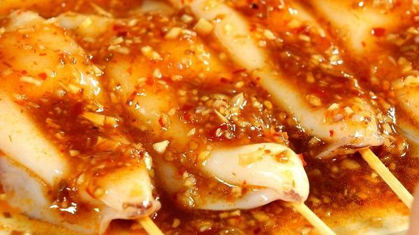

Trở về trang chủ
Công thức mực nướng sa tế
Công thức của web Điện máy xanh
Nguyên liệu
- Mực ống tươi 500 gr
- Sa tế 2 muỗng canh
- Gừng 1 củ
- Sả 2 cây
- Tỏi 1 củ
- Hành tím 2 củ
- Rượu trắng 100 ml
- Que xiên 100 gr
Hướng dẫn
-
Mực tươi mua về làm sạch, rút bỏ mai mực, mắt mực, túi mực, rửa sạch
cả bên trong lẫn bên ngoài với rượu trắng và gừng. Rửa sạch với nước
để hết mùi rượu, để nguyên con.
-
Để ướp mực bạn tiến hành pha hỗn hợp nước sốt trong 1 chiếc bát như
sau: 2 muỗng sa tế, 2 muỗng canh dầu hào, hành, tỏi, sả băm nhỏ, 2
muỗng canh đường thốt nốt, 1 muỗng canh hạt nêm, 1 muỗng nước lọc.
Trộn đều hỗn hợp rồi rưới lên mực. Dùng màng bọc thực phẩm bọc lại rồi
cất trong ngăn mát tủ lạnh 30 phút. Trong thời gian ướp mực bạn sẽ
chuẩn bị bếp than, vỉ nướng để nướng mực.

-
Đặt vỉ nướng lên bếp, dàn đều mực lên trên bắt đầu nướng. Nướng mỗi
mặt khoảng 5 phút rồi trở mặt còn lại, quét nhiều lần nước sốt ướp để
mực không bị cháy. Khi thấy mực chín vàng dậy mùi thơm thì cho mực ra
đĩa, cắt khúc vừa ăn.
-
Thành phẩm